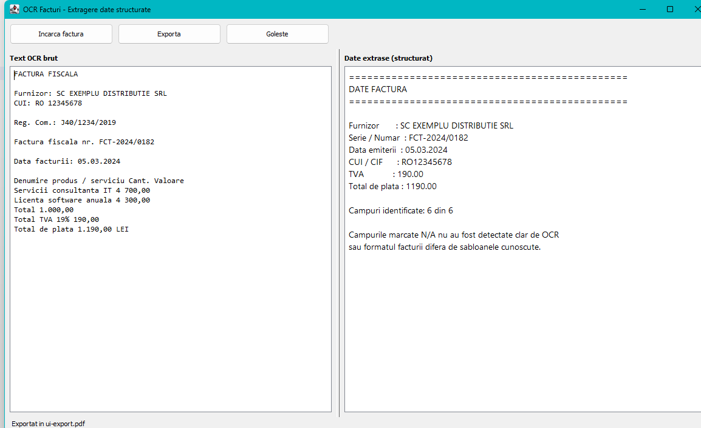

Exporting
Once an invoice has been read, Exporta (Export) saves the result as a file in one of seven formats.

How to export
- Load an invoice as usual. Until one has been read, Exporta stays greyed out — there is nothing to save yet.
- Click Exporta. A save dialog opens, titled Exporta datele facturii (Export invoice data).
- Pick a format from the list at the bottom of the dialog. Changing the format updates the file extension in the name field for you.
- Confirm. The status bar reports Exportat in … (Exported to …) when the file is written.
The file name is suggested from the invoice you loaded: reading factura-03.png proposes factura-03.pdf. The dialog reopens in the folder you exported to last.
If the file already exists, you are asked before it is replaced.
The seven formats
| Format | Extension | Contains | Best for |
|---|---|---|---|
| PDF document | .pdf | Fields and raw text | Filing, printing, sending to someone |
| Plain text | .txt | Fields and raw text | Pasting into an e-mail or a note |
| Markdown | .md | Fields and raw text | Notes, wikis, issue trackers |
| HTML page | .html | Fields and raw text | Opening in a browser, sharing a link |
| JSON data | .json | Fields only | Importing into another program |
| XML data | .xml | Fields only | Accounting software, data exchange |
| CSV spreadsheet | .csv | Fields only | Excel, LibreOffice, a running ledger |
The split is deliberate:
- Readable formats — PDF, TXT, Markdown, HTML — carry the six fields and the raw OCR text, because a person reading the file later may need to check what the recognition engine actually saw.
- Data formats — JSON, XML, CSV — carry the fields alone, because a program reading them wants a clean record and nothing else.
What each format looks like
An A4 document: the six fields, the count of how many were recognised, and the raw OCR text underneath in a fixed-width font. Long invoices continue onto further pages, each numbered.
The text is real text, not a picture, so it can be searched and copied in any PDF reader.
Romanian letters in PDF. PDF's built-in fonts cannot show
ă,șorț, so those are written asa,sandtin the PDF only. Every other format keeps them exactly as recognised. If the diacritics matter to you, export HTML or TXT instead.
CSV
A header row of field names and one row of values:
supplier,invoiceNumber,issueDate,fiscalCode,vatAmount,totalAmount
SC EXEMPLU DISTRIBUTIE SRL,FCT-2024/0182,05.03.2024,RO12345678,190.00,1190.00Because the header is always the same, several exported invoices stack into one spreadsheet: paste each new row under the last. A field that was not found is an empty cell.
JSON
{
"supplier": "SC EXEMPLU DISTRIBUTIE SRL",
"invoiceNumber": "FCT-2024/0182",
"issueDate": "05.03.2024",
"fiscalCode": "RO12345678",
"vatAmount": "190.00",
"totalAmount": "1190.00"
}A field that was not found is null, never a missing key, so the shape of the object is the same every time.
XML
<?xml version="1.0" encoding="UTF-8"?>
<invoice recognized="6" fields="6">
<field key="supplier" found="true">SC EXEMPLU DISTRIBUTIE SRL</field>
<field key="totalAmount" found="true">1190.00</field>
</invoice>The found attribute distinguishes "not printed on the invoice" from "read as an empty value".
Markdown and HTML
Both render the fields as a table and the raw OCR text below it. The HTML file is self-contained — the styling is inside the file — so it can be e-mailed or archived on its own and still look right.
Field names in data formats
JSON, XML and CSV use fixed English keys, never the translated labels, so a file means the same thing whatever language the interface is set to:
| Interface label | Key in JSON, XML and CSV |
|---|---|
| Furnizor | supplier |
| Serie / Numar | invoiceNumber |
| Data emiterii | issueDate |
| CUI / CIF | fiscalCode |
| TVA | vatAmount |
| Total de plata | totalAmount |
Choosing which format opens first
The save dialog starts on PDF. To change that, set export.defaultFormat to pdf, txt, md, html, json, xml or csv.
Notes
- Exporting never changes the invoice image, and never alters what is on screen.
- Values are exported exactly as shown in the right-hand panel, already normalised — amounts as
1190.00, dates as05.03.2024. - Fields shown as
N/Aare exported as empty (CSV, XML),null(JSON) orN/A(readable formats). - If writing fails — a full disk, a read-only folder, a disconnected network drive — an existing file of the same name is left untouched. See Troubleshooting.
See also: The Main Window · Extracted Fields · Settings